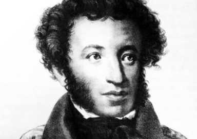

Пушкин Александр Сергеевич

Годы жизни: 1799 - 1837
Русский поэт, драматург, прозаик, публицист, переводчик, один из основоположников русского литературного языка.
Родился в дворянской семье, получил домашнее образование, затем учился в Лицее, где подружился с будущими декабристами.
Первые произведения Пушкина, такие как «Руслан и Людмила» и «Евгений Онегин», сделали его знаменитым.
В 1820 году был сослан в южное Поволжье за участие в тайном обществе. Вернулся в Петербург в 1826 году.
Автор множества поэтических произведений, пьес, романов, рассказов, дневников и писем.
Скончался в 1837 году от ран, полученных в дуэли с Жоржем Дантесом.
Первые произведения Пушкина, такие как «Руслан и Людмила» и «Евгений Онегин», сделали его знаменитым.
В 1820 году был сослан в южное Поволжье за участие в тайном обществе. Вернулся в Петербург в 1826 году.
Автор множества поэтических произведений, пьес, романов, рассказов, дневников и писем.
Скончался в 1837 году от ран, полученных в дуэли с Жоржем Дантесом.